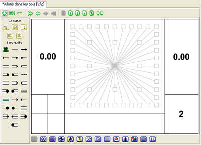

Choisir
Ajouter Case dans le menu
Edition, une
boîte de dialogue apparaît pour vous permettre de saisir des informations sur la case. Dans le cadre de la progression de cette formation, nous allons nous limiter à un click sur le bouton "Ok".

Comme l'indique l'onglet à présent notre road book comporte deux cases et l'éditeur est positionné sur la deuxième case. Il existe quatre autres manières d'ajouter une ou plusieurs cases dans un road book.
|
L'insertion d'une case: Alors que l'ajout d'une case se fait en fin de road book, l'insertion de la nouvelle case se fait à la position courante. Ainsi si vous demandez l'insertion d'une case alors que vous êtes sur la première case, alors la nouvelle case sera insérée à la première position.
|
|
Le coller par insertion: Cette opération est semblable à la première à l'exception du fait qu'on insert une case qui a été copiée dans le presse papier de l'application.
|
|
L'ajout d'un livre: Cette opération revient à importer le contenu d'un autre road book pour l'ajouter à la fin du road book en cours d'édition.
|
|
L'insertion d'un livre: Cette opération revient à importer le contenu d'un autre road book pour l'insérer dans road book en cours d'édition.
|